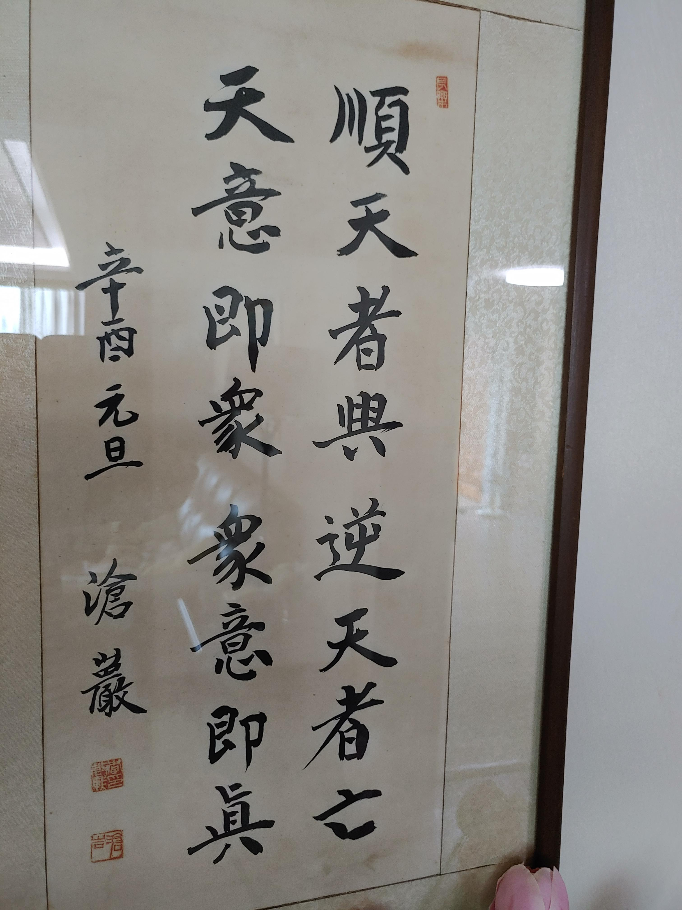
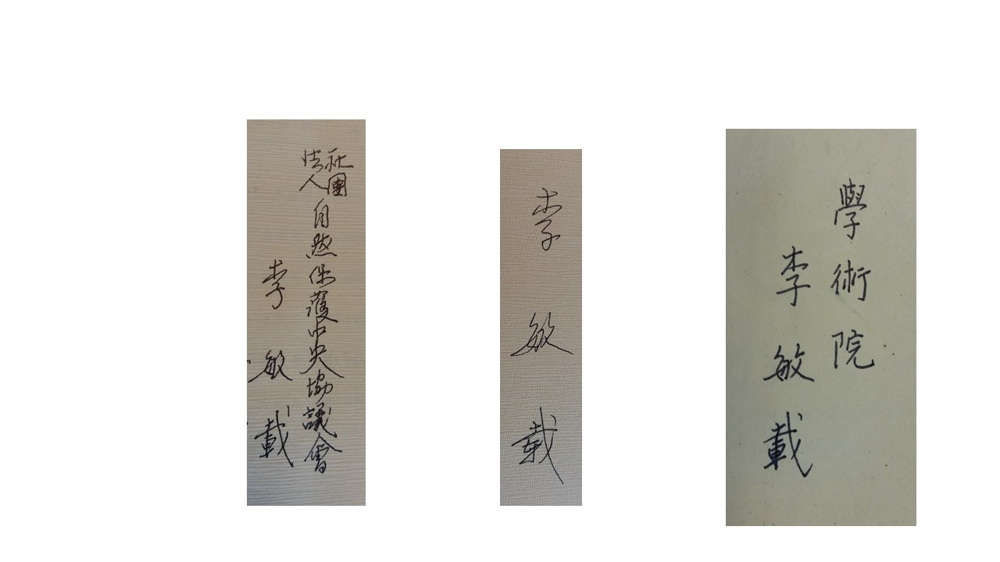

1981년 신유년에 쓰신 이글은 당시 정치사회 상황을 말하시는 것일까.... 아버지필체는 힘이 있으면서 유려하다. 펜글씨의 경우는 더욱 조화로우며 달필이다. 젊은시절 밤새며 원고지 200장씩 하루에 써내려 가셨다는 말씀을 들었다. 그 원고들의 상당부분은 아직도 보관중이다. 아래 펜글씨 샘플.

단아하고 구성진 한시서첩은 당대의 이름난 서도가 일몽 이홍기가 아버지 함자를 바탕하여 작성 아버지께 헌정하신것으로 추정된다. 글씨체가 하나하나 독창적이고 예술적 미려한 작품이다. 문교차관 취임하실 무렵 1961년.